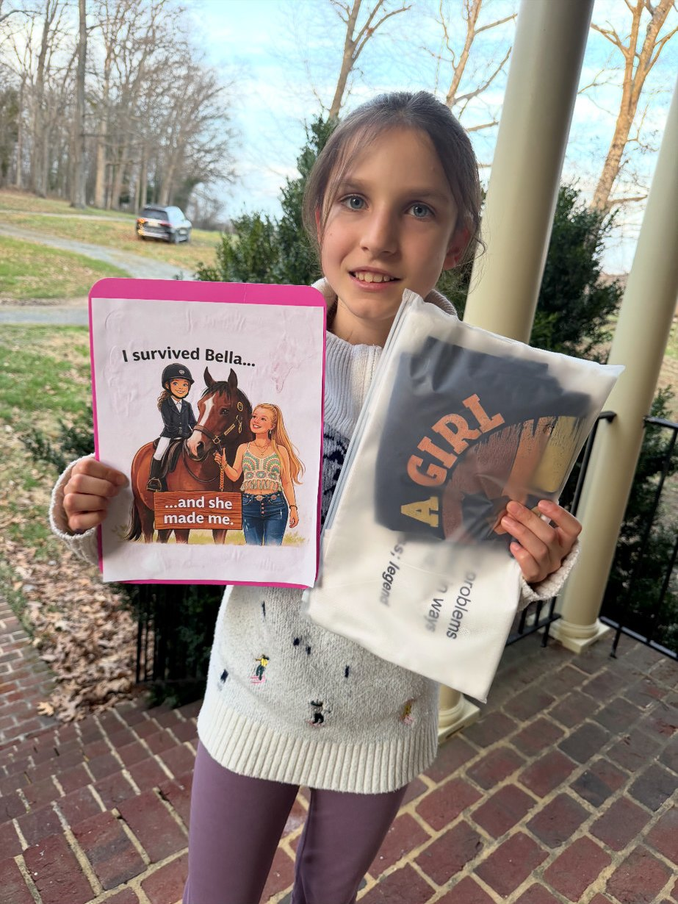
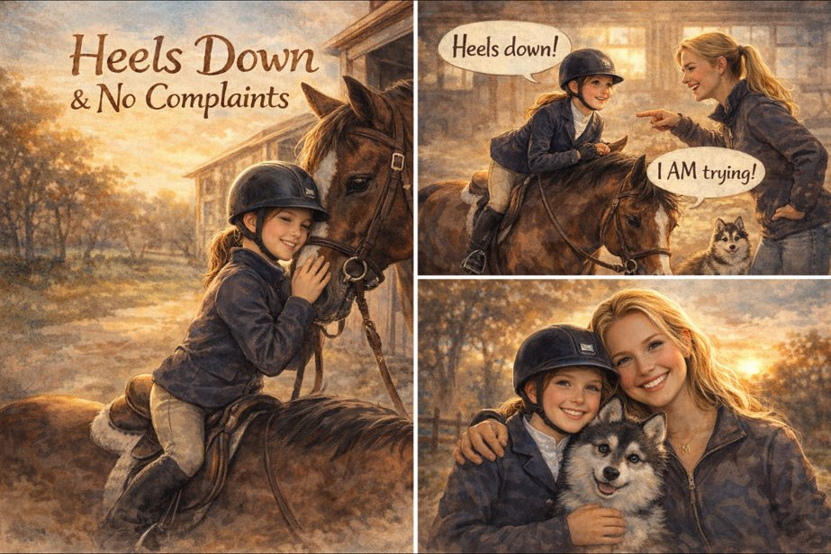
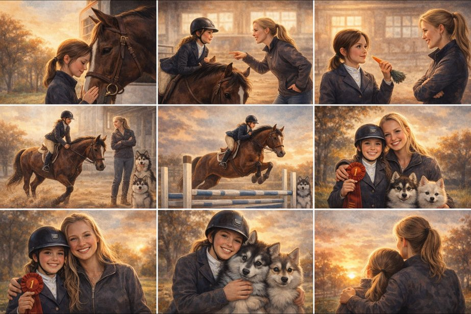

Curious about animals
Big questions.
Little paws.
Join Charlotte as she talks with the people who care for animals and shares the creatures she meets along the way — from the barn to the zoo to her own home.



Stories
All storiesInterview · Horse training
Meet horse trainer Martha Wunder
Charlotte's conversation with a horse trainer about working with horses, including her visit to check on Crispy.
Open storyField notes · Wildlife
A baby elephant at the National Zoo
Charlotte's visit with the baby elephant and a closer look at the people who care for zoo animals.
Open storyAt home · Puppies
Meet the puppies
Follow three tiny puppies as they grow, play, and discover the world around them.
Open storyWashington, DC area
The Lemonade
Society
Charlotte is a mini co-CEO of The Lemonade Society, with Hendrik, in the Washington, DC area. It is part of the LiTEArary Society and works to promote a lifelong love of books among preschool-aged children in disadvantaged communities.
The Lemonade SocietyAbout Charlotte
Hi, I'm Charlotte. I love animals and I love asking questions. On this podcast, I want to meet veterinarians, trainers, and other animal experts to learn what their days are like and how they help the animals we care about.